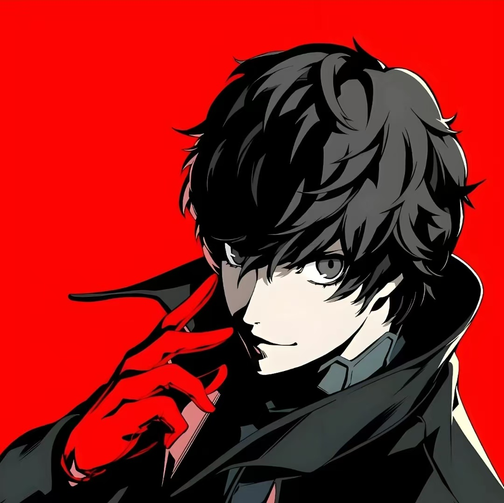
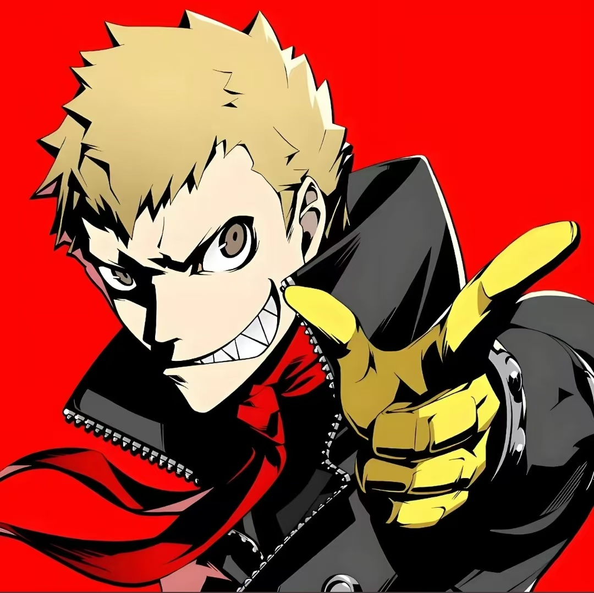
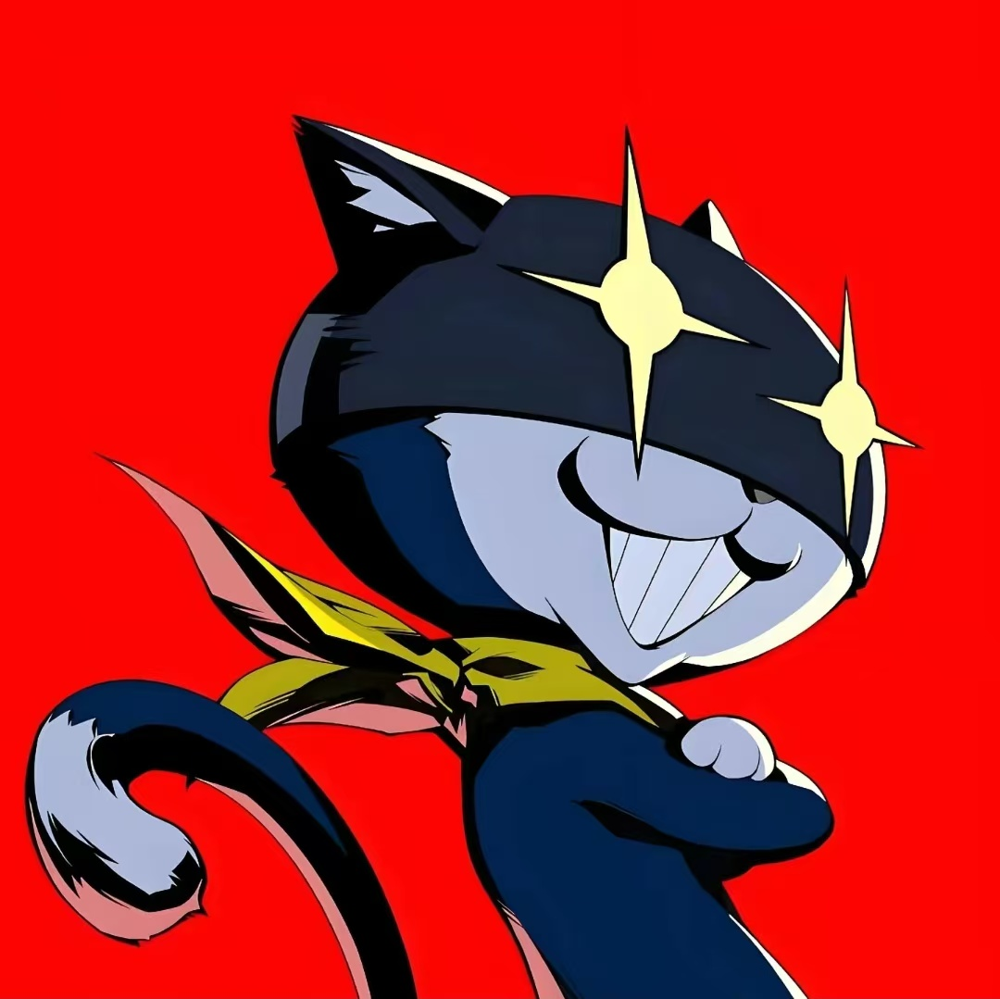
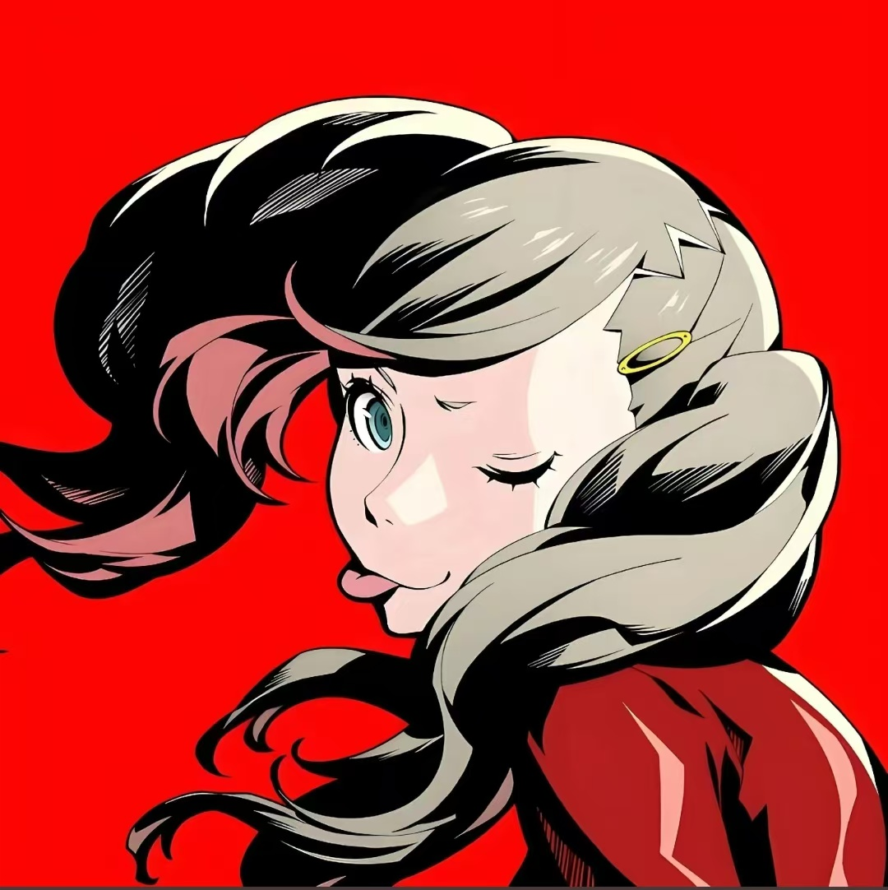
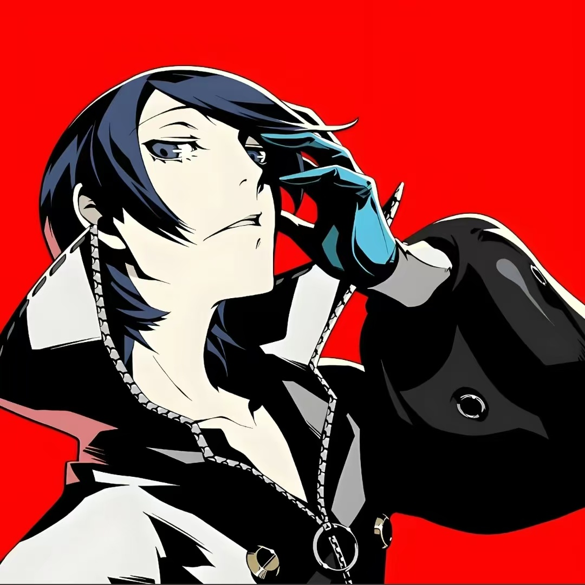
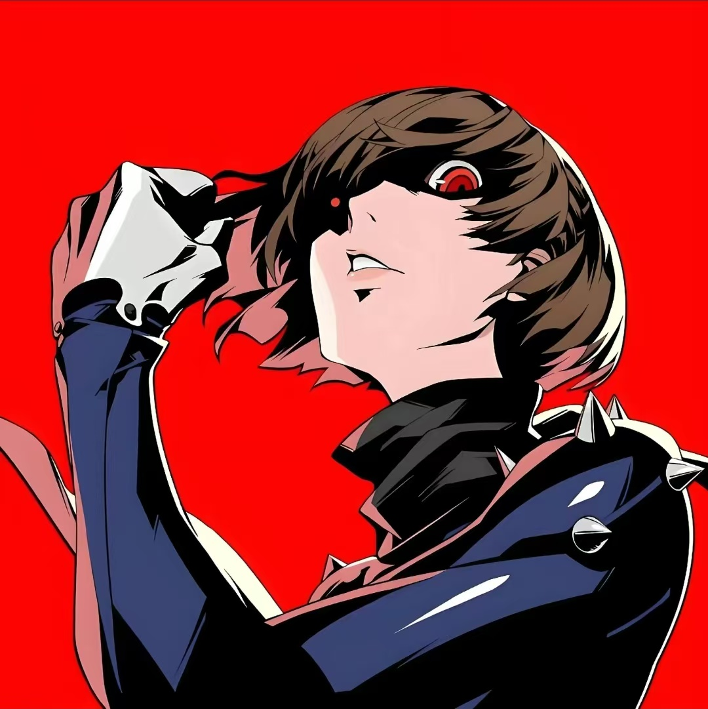
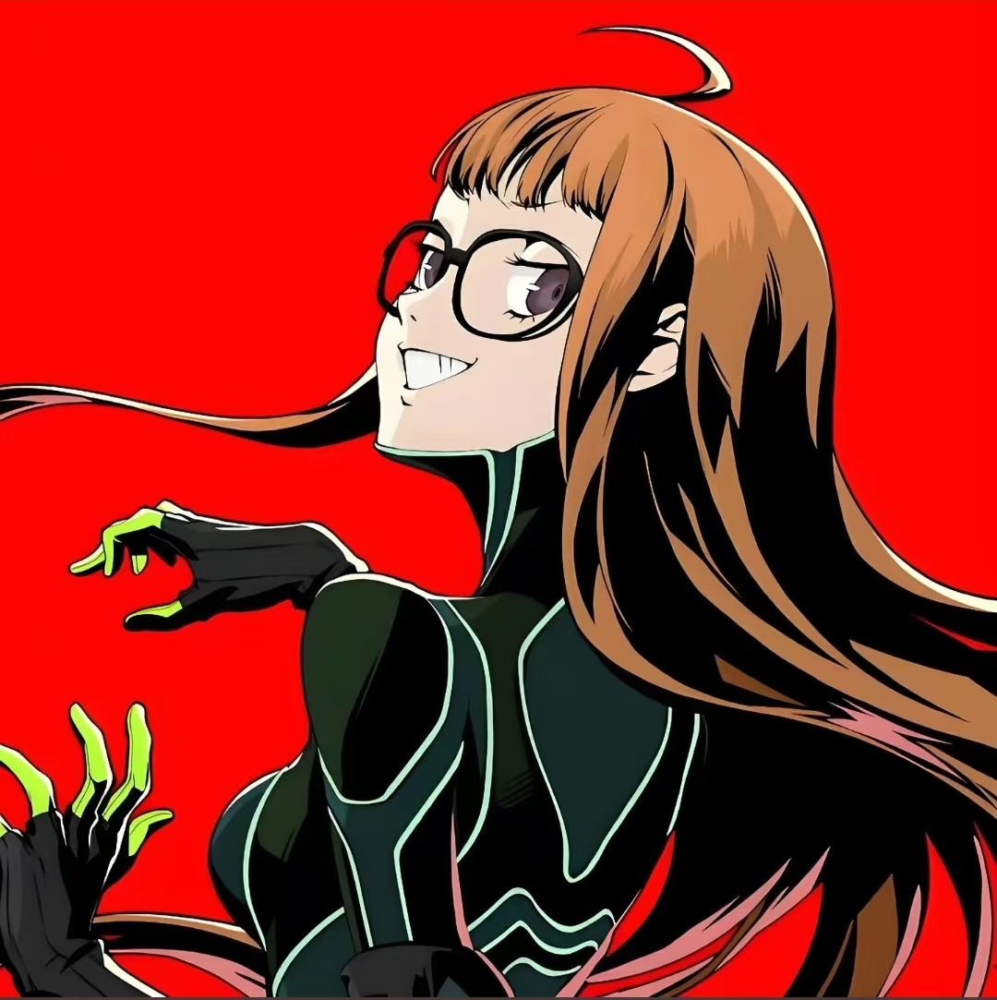
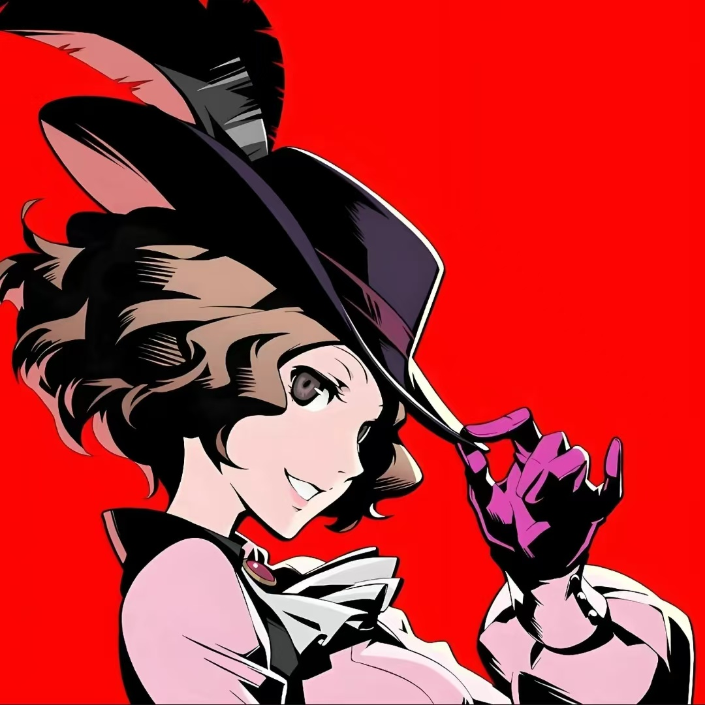
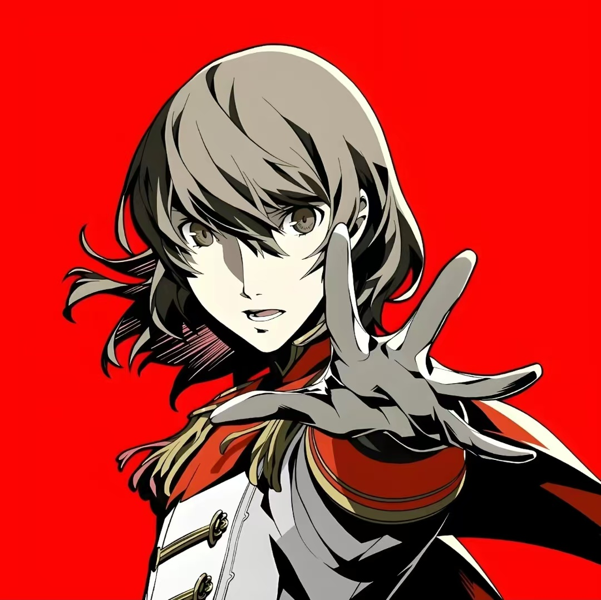
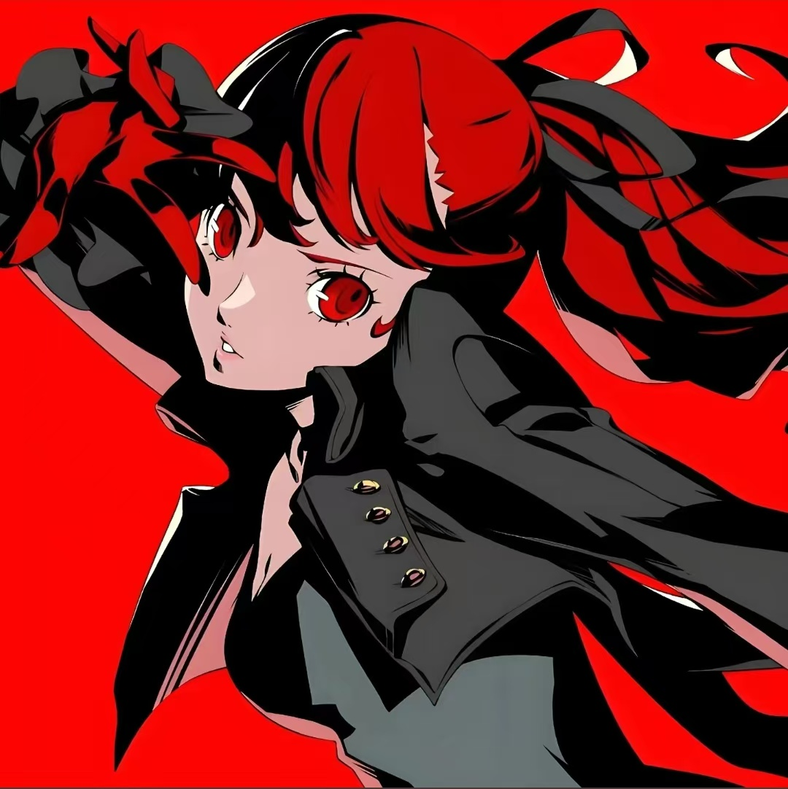

雨宫莲原本是一个普通的少年，因见义勇为阻止一位醉酒男性袭击女性，却被反咬一口，诬陷为“施暴者”，身背案底，被迫转学到东京的秀尽学园，寄住在熟人经营的勒布朗咖啡馆。这段不公的经历让他早早看清了社会的阴暗面，也让他内心埋下了反抗的种子。在觉醒人格面具后，他成为心之怪盗团的首领，代号“Joker”，表面上是温顺内敛的转学生，戴上面具后却成为运筹帷幄、勇敢无畏的怪盗领袖。他冷静、机智，有着极强的领导能力，始终坚守着“拯救被扭曲心灵、揭露真相”的信念，在与伙伴们的并肩作战中，不仅救赎了他人，也逐渐解开了自己心中的枷锁，最终在案件结束后，洗清了自己的冤屈，带着与伙伴们的羁绊，回归了平凡却充满希望的生活。他的人格面具“亚森”（原型为侠盗亚森·罗宾），也象征着他“在黑暗中守护正义”的特质。

坂本龙司曾是秀尽学园田径队的种子选手，有着惊人的速度和爆发力，却因反抗鸭志田卓的虐待，被诬陷为“暴力分子”，沦为学校里人人避之不及的“不良少年”。他外表粗犷、嗓门大，看似鲁莽冲动，实则内心热血、正直善良，有着强烈的正义感和荣誉感。在与雨宫莲一同进入鸭志田的认知之宫后，觉醒人格面具“船长基德”，代号“Skull”，成为怪盗团中冲锋陷阵的核心战力。他始终坚守着自己的信念，哪怕被昔日的队友误解、被学校排挤，也从未放弃反抗不公。在后续的战斗中，他多次为了保护伙伴挺身而出，尤其是在狮童正义的认知之宫中，他不顾危险纵身一跃，为伙伴们争取了逃生的机会，用行动证明了自己的可靠。最终，鸭志田的罪行被揭露，龙司洗清了污名，虽然没有回到田径队，却找到了比跑步更重要的东西——伙伴和正义，他依旧是那个热血不羁，却始终守护着身边人的少年。

摩尔加纳是一只外表酷似黑猫、能够说话的神秘生物，它出现在雨宫莲和龙司进入认知之宫的关键时刻，成为了他们的向导，教会他们使用人格面具的力量。它自称“吾辈”，性格傲娇，经常强调“我不是猫”，却有着猫的习性，对高卷杏有着特殊的好感。摩尔加纳对认知世界有着丰富的了解，是怪盗团中不可或缺的智囊，负责规划行动路线、解析敌人弱点。但它的身世一直是个谜团，它始终坚信自己可以变成人类，为此不断努力。在冒险的过程中，它与伙伴们建立了深厚的羁绊，也曾因迷茫而短暂离开过怪盗团，但最终还是选择回归，与伙伴们并肩作战。随着剧情的推进，它逐渐揭开了自己的身世之谜，也明白了“无论是否是人类，只要有伙伴在，就是完整的自己”，最终放弃了变成人类的执念，成为了怪盗团中永远的“吉祥物”和可靠伙伴。

高卷杏是秀尽学园的转学生，拥有四分之一美国血统，是一位兼职模特，外表靓丽，却因出众的容貌和性格而被同学们孤立。她的父母常年在海外经商，给予了她优渥的物质条件，却缺失了陪伴与关爱，这让她内心敏感又孤独。在学校里，她被鸭志田卓胁迫，成为其“玩偶”，内心充满了不甘与挣扎，却无力反抗。在雨宫莲和龙司的帮助下，她觉醒人格面具“卡门”，代号“Panther”，加入怪盗团，逐渐摆脱了鸭志田的阴影，变得自信、勇敢。她看似泼辣直率，实则内心柔软，非常重视伙伴，在战斗中擅长远程攻击，用自己的力量守护着身边的人。随着冒险的推进，她逐渐学会了正视自己的内心，不再在意他人的眼光，找到了属于自己的价值，最终成为了一朵敢于反抗、勇于绽放的“带刺玫瑰”。

喜多川祐介是公立洸星高校的艺术生，外表俊朗，有着独特的艺术审美，却因性格孤僻而被同学孤立。他从小父母双亡，被知名艺术家斑目一流斋收养，成为其学徒，却不知自己的画作一直被斑目窃取，甚至母亲的去世也与斑目有着间接的关系。在怪盗团调查斑目的过程中，喜多川祐介逐渐发现了真相，内心的愤怒与不甘让他觉醒了人格面具“石川五右卫门”，代号“Fox”，加入怪盗团，决心用自己的画笔“描绘”真相，为母亲和自己讨回公道。他性格冷静、沉稳，擅长观察细节，在战斗中凭借敏捷的身手和精准的攻击，成为怪盗团的重要战力。在揭露斑目的罪行后，他终于摆脱了斑目的控制，找到了自己的艺术方向，不再为他人而活，而是用画笔记录下伙伴们的羁绊与正义的力量，成为了一名真正的艺术家。

新岛真是秀尽学园的高三学生，同时也是学生会会长，外表端庄、成绩优异、冷静理智，是老师和同学眼中的“完美优等生”。她有着强烈的责任感和正义感，却因过于执着于“规则”，而显得有些固执。她的姐姐新岛冴是高级检察官，姐妹俩因观念不同而关系疏远，再加上父亲被金城润矢欺骗而背负巨额债务，让她内心备受压力。为了拯救家庭、揭露金城的罪行，她觉醒了人格面具“琼安”，代号“Queen”，加入怪盗团，逐渐打破了自己身上的“束缚”，学会了灵活变通，不再被规则所局限。她是怪盗团中的“智囊”之一，擅长分析局势、制定计划，在战斗中凭借强大的防御和攻击能力，保护着伙伴们。最终，她不仅揭露了金城的罪行，还修复了与姐姐的关系，明白了“正义不在于墨守成规，而在于坚守本心”，在毕业之际，找到了属于自己的人生方向。

佐仓双叶是一位天才黑客，拥有超乎常人的计算能力和编程技术，却因母亲的“自杀”而陷入巨大的自责，长期封闭自我，足不出户，成为了“家里蹲”少女。她一直以为母亲是因为自己而自杀，内心充满了愧疚与恐惧，直到怪盗团调查一色若叶的案件时，才发现母亲的死并非自杀，而是被一色若叶灭口，目的是掩盖人体实验的秘密。真相大白后，双叶内心的枷锁被打破，觉醒了人格面具“死灵之书”，代号“Navi”，加入怪盗团，成为怪盗团的“技术担当”，负责破解敌人的防御系统、提供情报支持。在伙伴们的陪伴与鼓励下，她逐渐走出了阴影，学会了与人交流，变得开朗、自信，不再被过去的创伤所困扰。她用自己的黑客技术，多次帮助怪盗团化险为夷，最终不仅为母亲报了仇，也找到了自己的价值，成为了一名勇敢、坚强的少女。

奥村春是大型连锁餐饮公司社长奥村邦和的女儿，出身豪门，气质优雅、落落大方，有着良好的教养，却因成长环境的原因，习惯了隐藏自己的内心，不擅长与人深交。她从小就生活在父亲的光环下，被安排好一切，直到发现父亲为了追求利益，不惜压榨员工、使用劣质食材，内心备受煎熬。她不愿与父亲同流合污，却又无力改变现状，在怪盗团的影响下，她觉醒了人格面具“米莱狄”，代号“Noir”，加入怪盗团，决心用自己的力量改变父亲，拯救被压迫的员工。她看似温柔，却有着坚定的信念和强大的勇气，在战斗中擅长远程攻击，用自己的力量守护着那些被忽视的弱者。最终，她成功让父亲醒悟，整改了企业，也摆脱了豪门的束缚，找到了自己真正想要的生活，不再是那个被宿命安排的大小姐，而是成为了一个能够掌控自己人生的独立女性

明智吾郎是一位天才侦探，被誉为“侦探王子”，外表优雅、智商超群，却有着扭曲的内心。他从小缺乏关爱，渴望被认可，内心充满了嫉妒与孤独，曾与新岛冴、狮童正义合作，试图通过掌控他人来证明自己的价值。在调查心之怪盗团的过程中，他逐渐被怪盗团的信念所感染，也发现了狮童正义的阴谋，内心开始动摇。最终，他选择背叛狮童正义，加入怪盗团，代号“Crow”，用自己的智慧和力量，帮助怪盗团揭露了狮童的罪行。他的人格面具“罗宾汉”，象征着他“从反派走向正义”的转变。在战斗中，他擅长精准攻击，是怪盗团的重要战力。虽然他曾走错路，但最终还是在伙伴们的帮助下，找到了属于自己的光明，放下了内心的扭曲与嫉妒，学会了信任与陪伴，实现了自我救赎。

芳泽霞是秀尽学园的一年级转学生，是一位天赋异禀的体操选手，备受校方期待，外表清纯、温柔善良，却有着不为人知的过去。她的母亲是一位著名的体操选手，却因意外去世，芳泽霞一直活在母亲的阴影下，被周围的人寄予过高的期望，也被束缚在“完美体操选手”的标签中，内心充满了压力与迷茫。在与雨宫莲的相处中，她逐渐打开心扉，在一次意外中觉醒了人格面具“灰姑娘”，代号“Violet”，加入怪盗团。她性格坚韧、勇敢，在战斗中凭借灵活的身手，成为怪盗团的新生力量。在伙伴们的陪伴下，她逐渐摆脱了母亲的阴影，不再被他人的期望所束缚，找到了自己热爱体操的真正原因，也学会了正视自己的内心，最终成为了一名既优秀又自由的体操选手，也收获了真挚的友谊。